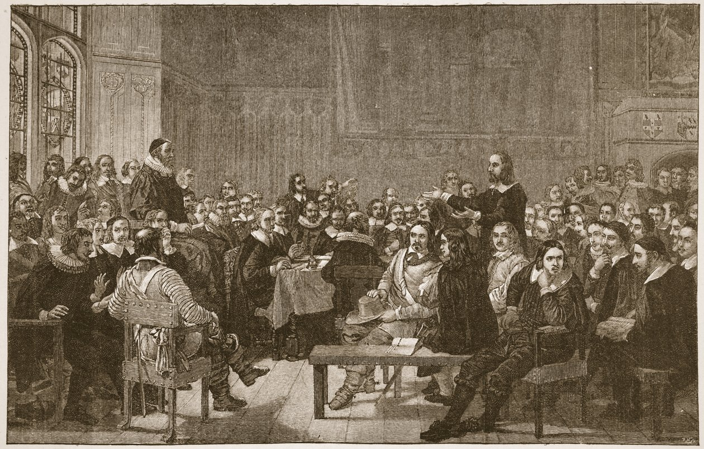

Scriptural Doctrine
As followers of the Lord Jesus Christ, we are committed to the historic doctrines of Biblical Christianity, as revealed in the Bible (2 Tim. 3:16–17). Relying exclusively upon God’s infallible Word, we boldly confess that:
- Scripture alone is our all-sufficient, inspired, inerrant, and infallible authority for every aspect of doctrine, worship, ministry, and ethics.
- Grace alone is the basis upon which the Triune God freely chooses, redeems, regenerates, forgives, and transforms hell-deserving sinners into heaven-bound saints.
- Christ alone (as the God-man Mediator) redeems lost sinners by the infinite merit of His perfect obedience, His atoning death, and His victorious resurrection.
- Faith alone is the instrument or means whereby we must receive Christ and His spotless, blood-bought righteousness for our justification.
- Glory be to God alone for sovereignly planning, accomplishing, and applying every aspect of human salvation to His people, from start to finish, such that He says, “I will not give My glory to another!” (Isa. 48:11) and such that we must say, “Not unto us, O LORD, not unto us, but to Your name give glory” (Ps. 115:1).
Based upon our own understanding of God’s Word, we happily embrace as our creed the Westminster Confession of Faith along with the Larger and Shorter Catechisms. We also adhere to the Testimony of the Reformed Presbyterian Church of North America as an ongoing application of the Scriptures to contemporary life. For a more detailed treatment of the sufficiency and reliability of the Scriptures, we recommend listening to our pastor’s Theological Foundations Afternoon lessons entitled, Five Reasons to Trust Your Bible and Five Reasons for Six Day Creation.